С Чердаков
Айдентика барахолки, где вещи обретают новую жизнь, переходя от дома к дому.
Её главные жители — медвежата с разными характерами и эмоциями: их разноцветные «заплатки» перекликаются с простыми силуэтами предметов, объединяя забытые вещи и найденные истории в одно дружелюбное пространство.
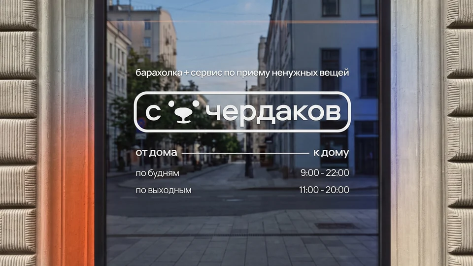
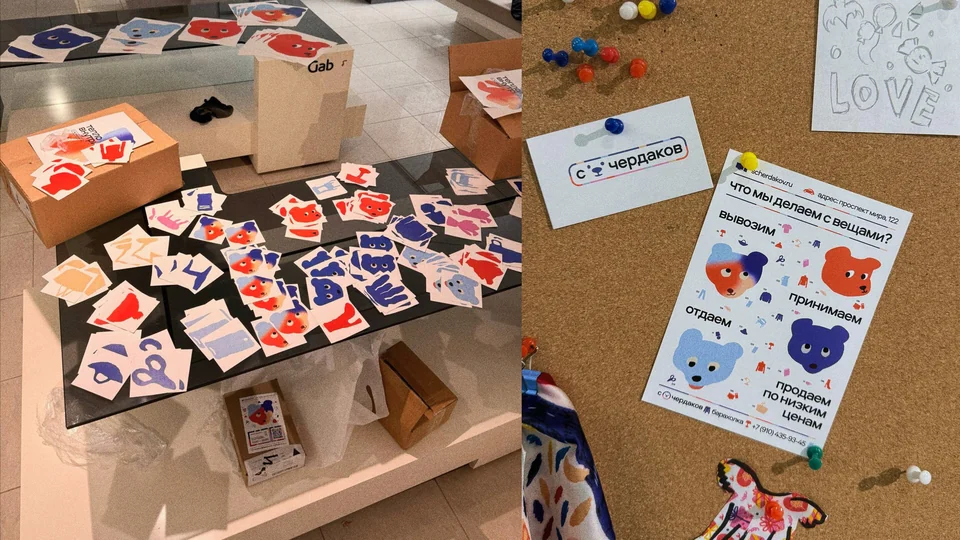
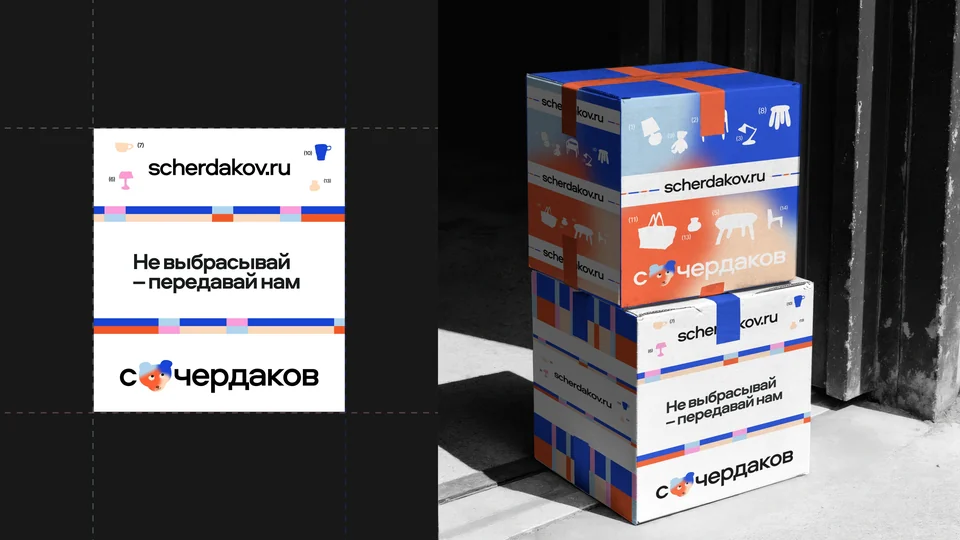
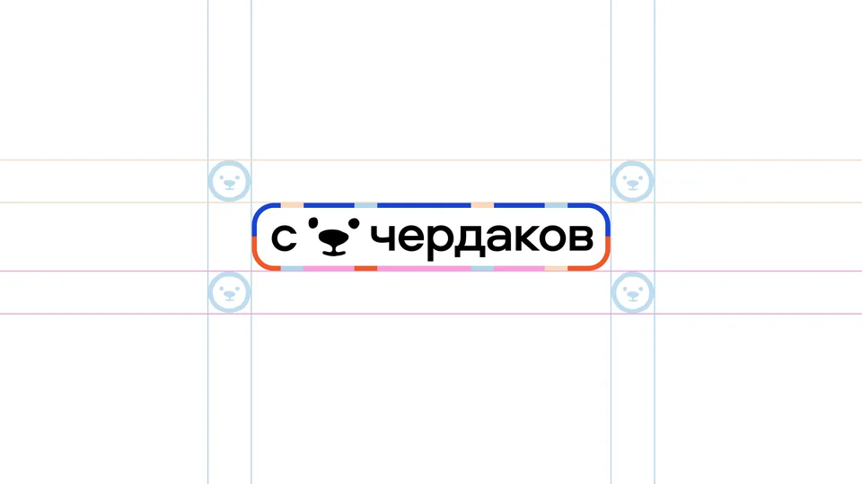
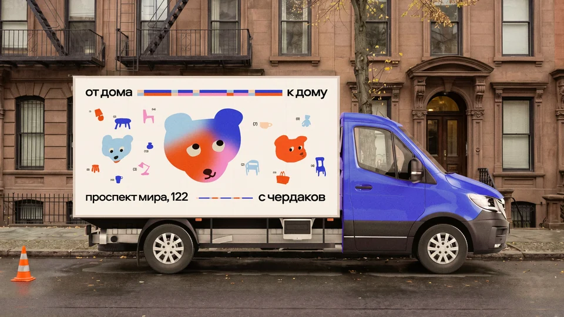
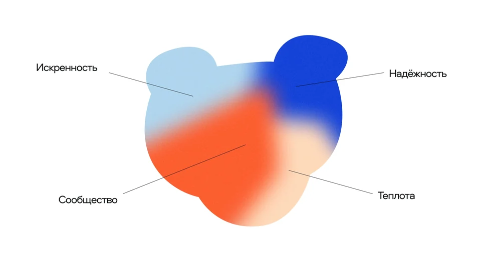
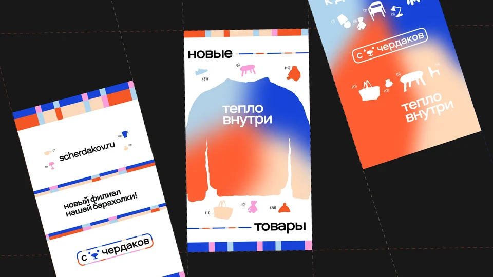
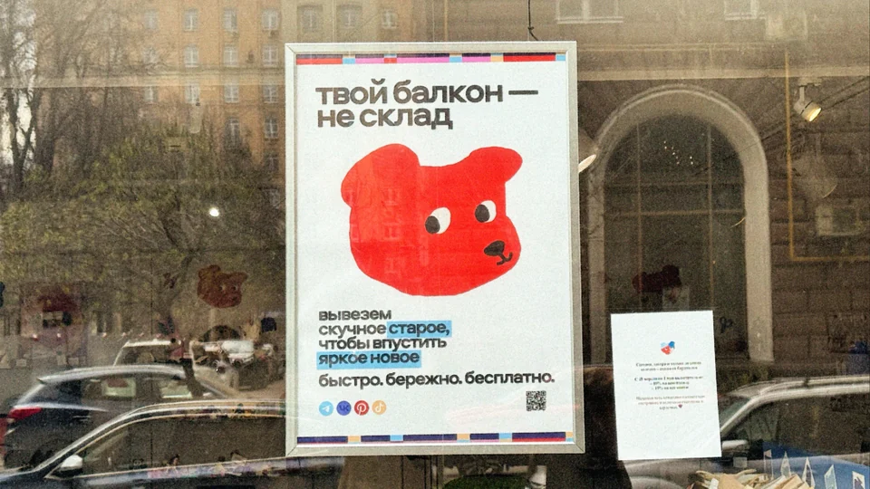
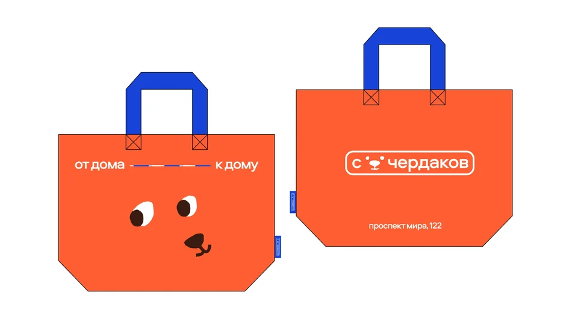
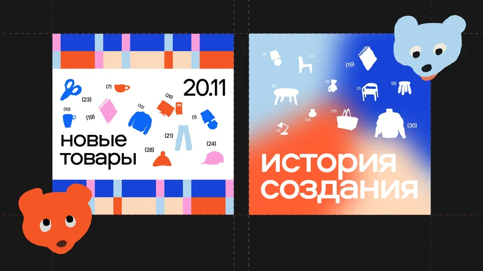
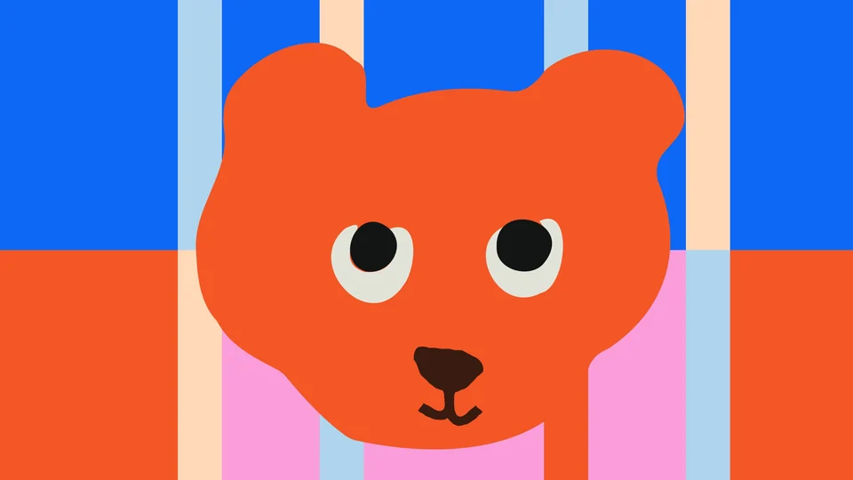
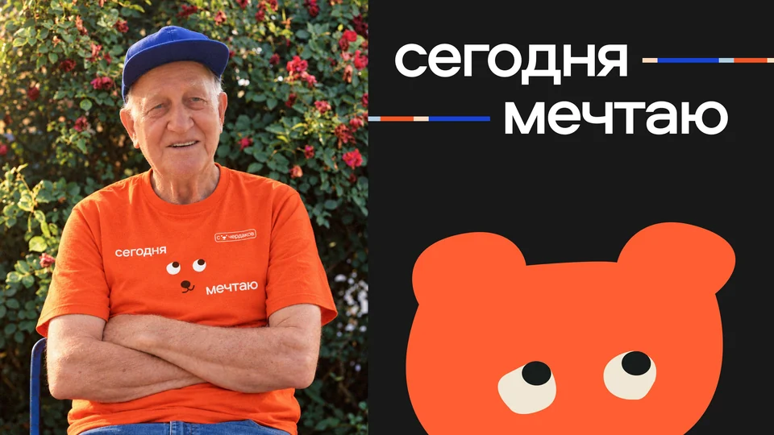
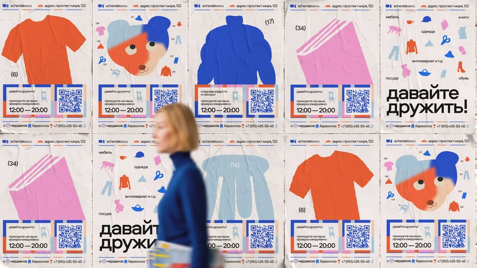
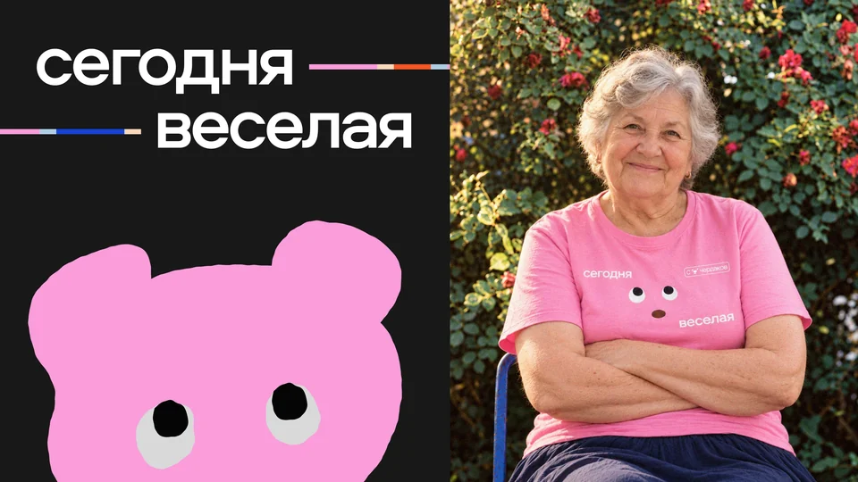
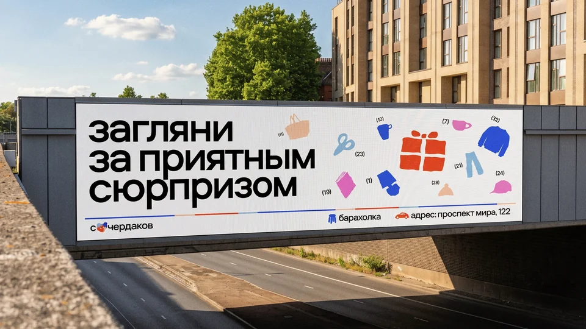
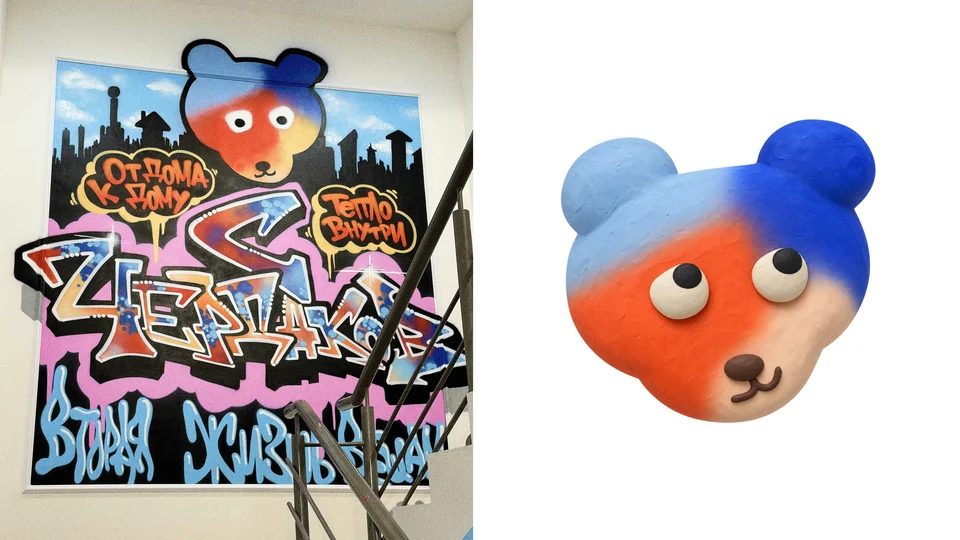
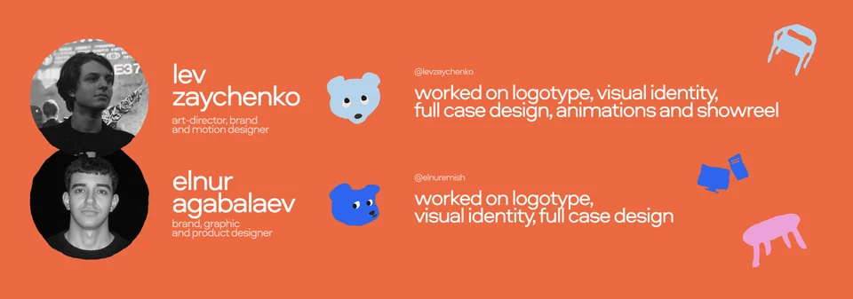